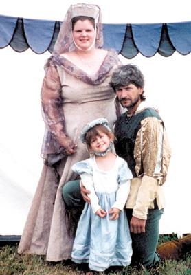

|
Local family takes step back in time
By
Joanne Braun, Staff Writer
Wednesday, March 2, 2005 When Tammy Crawford wants to get away from it all, she simply becomes someone else. Her name changes to Signora Tomasia da Collivento, who was born in Castaglione, Italy in 1393. She becomes a kitchen worker cooking medieval feasts instead of the secretary at Hebron United Presbyterian Church. Her husband, John, also plays along, and becomes a medieval archery marshall, and their 5-year-old daughter, Victoria, turns into a princess. Instead of living in Clinton, they reside in the Kingdom of Aethelmearc and are members of the Canton Stelton Wald. The transformation all began about five years ago when Tammy, of Clinton, went looking for a medieval re-enactment group for her husband, John, who loved dragons and wizards. What she found was the Society of Creative Anachronism (SCA), an international organization dedicated to researching and re-creating the arts and skills of pre-17th-century Europe. The SCA's world consists of 18 kingdoms, with over 30,000 members residing in countries around the world. Members, dressed in clothing of the Middle Ages and Renaissance, attend events, which may feature tournaments, arts exhibits, classes, workshops, dancing, feasts, and more. Members can get involved in and learn about many different facets such as archery, fencing, woodworking, crafts, arts, science, games and other past times from that period. Soon after her husband joined, Tammy became involved in the kitchen work, helping to prepare the feasts featuring foods from long ago. She teamed up with another SCA member, Jim Matterer of Mt. Morris, Pa., also known as Master Huen in the medieval world, who has been researching and recreating medieval food since 1979. He asked Tammy if she would like to be his apprentice, and she has now been his student for 2 1/2 years. Last year she began helping him with his Web site, A Boke of Gode Cookery at www.godecookery.com. The site consists of a compilation of medieval recipes from authentic sources adapted for the 21st Century kitchen along with diverse facts on food and feasting in the Middle Ages and Renaissance and other historical culinary items. Tammy is the editor of the Gode Cookery recipe collection. She says she takes lots of pictures of the food to accompany the recipes on the Web site so that the cooks know what the dish is suppose to look like. She gets her recipes from research in libraries, on the internet, and through Michigan State University, which scans old books from libraries and museums and make them available. Many times samples of the food she makes are given out to the public when Tammy and her group do demonstrations. Tammy also collects cookbooks and has done so even before getting involved in SCA. She had more than 200 cookbooks on compilation files from the 1700s or earlier and more than 500 cookbooks from the 1800s to modern times. "I grew up in a large family and there was always something cooking," she says. "I liked to do what my grandmother did, but during most of the time when I was growing up, my grandmother was in a wheelchair and I really couldn't learn everything from her so I decided I would educate myself." One of her medieval favorite recipes, that she says is addicting, is called chyches, which are garlic and onion garbonzo beans or chik peas. Although some of the other recipes call for blood, she laughs and says she doesn't make those ones. She substitutes red wine for the blood. Her love for cooking the medieval foods also lead her to helping Matterer with his medieval catering business, with the same name as his Web site, Gode Cookery. At times, Tammy has cooked medieval foods for weddings with medieval themes, and Materer sells medieval cookies all over the world. His catering business also is the premiere caterer for the Alabama Renaissance Fair, in which the Crawfords also participate. When Tammy is not catering, helping to develop the Web site or finding a new (or old) cookbook, she and Matterer are working on a cookbook of their own and occasionally starring in a television show. The cookbook of medieval recipes, titled the Book of Gode Cookery, is expected to be available by September, and more information can be obtained from the Gode Cookery Web site. And, just a few weeks ago, they completed the second taping of a television show for the Food Network, called The Secret Life of Birthday Cakes. Crawford says she and Matterer made a Roman wine cake, which was the predecessor of the birthday cake, dating back to the time of Emperor Caesar. The show will air sometime this summer. The first show, which aired last year, was titled, The Secret Life of Sandwiches, and focused on trenches bread. Tammy explains that the medieval bread had been used as a plate, but it was considered in poor taste to eat the plate - it would mean the diner was a glutton. But, eventually it was the beginning of a sandwich, because people began wrapping up the food inside the "plate." Both shows, hosted by Jim O'Connor of New York, were taped at the Century Inn, an 18th century bed and breakfast in Scenery Hill, south of Washington, Pa. Tammy says she hopes to continue doing the shows once a year. In the meantime, she and her family and other members of the SCA attend various medieval festivals such as the Pennsic War re-enactment near Coopers Lake. More than 15,000 medieval re-enactors get together for two weeks in mid August each year and "pretend they lived 500 years ago," Tammy says with a laugh. They also like to attend war practice for that event in May. The practice, open to the public, is for those in the Kingdom of Aethelmearc. Tammy explains that the "kingdom" encompasses those re-enactors who live within certain borders. She says that the kingdom, which covers western Pennsylvania, northern West Virginia and southern New York, includes smaller areas with various medieval names. The Crawfords are members of the Canton Stelton Wald, which consists of about 40 re-enactors, mostly from Beaver County. Since the re-enactors can't wear blue jeans or polyester to the events, Tammy also learned how to sew and make hers, her husbands and daughter's clothes from natural fibers. John is an archery marshall with the group and has been working on putting his armor together and Victoria dresses up as a princess complete with long skirt and puffy sleeves. Tammy says her daughter also is an adventurous eater and likes to try out the medieval foods. "One of the great things about doing this is you get to be and create someone completely different," she says. "We love to go to events because there are no TVs and cell phones. "It's a chance to escape from everyday normal life. A lot of our virtues are based on the old codes of conduct, chivalry and honor. Everyone is your friend and part of a big family." The Crawfords have pursued their hobby not only to Alabama and Coopers Lake, but also to York, New York and Kentucky, and Tammy says her dream is to go to Germany and England some day. Tammy also has taken her love of the medieval times beyond her passion for cooking. She also has a degree in art and has learned how to recreate the medieval manuscripts complete with calligraphy and gold gilding that used to be created by monks before the invention of the printing press. Next on the agenda for Tammy is her own medieval Web site, www.padronadicasa.us. The Web site, is named such, she says, because she has an Italian persona and it stands for Italian housewife. Although not quite ready, the Web site will be a link of the Gode Cookery site. Also, this summer she is hoping to again make a presentation about medieval cooking at West Allegheny Community Library. |

BACK to Gode Cookery's Latest Feast
A Boke of Gode Cookery Gode
Cookery's Latest Feast
Gode
Cookery's Latest Feast
© 1997-2005 James
L. Matterer
Please visit The Gode Cookery Bookshop